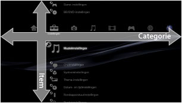
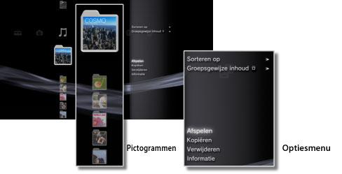
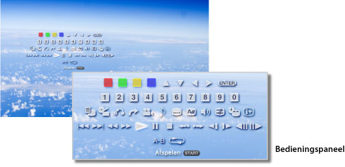

Over het XMB™-menu > Over het XMB™-menu (XrossMediaBar)
Over het XMB™-menu (XrossMediaBar)
Het XMB™-menu gebruiken
Het PS3™-systeem bevat een gebruikersinterface met de naam XMB™ (XrossMediaBar). De horizontale rij toont systeemfuncties in categorieën en de verticale kolom toont items die onder elke categorie kunnen worden uitgevoerd.

| Richtingstoetsen | Een categorie of item selecteren. |
|---|---|
 -toets -toets |
Het geselecteerde item bevestigen. |
 -toets -toets |
Een handeling annuleren. |
 -toets -toets |
Het optiesmenu/bedieningspaneel weergeven. |
| PS-toets | Het XMB™-menu weergeven. |
Inhoud afspelen
Selecteer vanuit het XMB™-menu de inhoud op de schijf of het opslagmedium en druk vervolgens op de -toets. Druk op de -toets om het afspelen te stoppen.
Opmerking
Een geschikte USB-adapter (niet bijgeleverd) is vereist om opslagmedia te gebruiken met bepaalde modellen van het PS3™-systeem.
Informatiepaneel
Op het informatiepaneel dat aan de rechterbovenkant van het scherm wordt weergegeven, kunt u informatie zien zoals het aantal vrienden die online zijn, een waarschuwing voor nieuwe berichten en de recentste informatie die beschikbaar is bij [Wat is er nieuw?].

(1) |
Avatar * |
|---|---|
(2) |
Aantal vrienden die online zijn * |
(3) |
Informatie over nieuwe tekstchat * |
(4) |
Informatie over nieuwe berichten |
(5) |
Datum en tijd |
(6) |
Bezig-pictogram |
(7) |
Beschikbare informatie bij [Wat is er nieuw?]* |
* Wordt alleen weergegeven wanneer u aangemeld bent bij PlayStation®Network.
Het optiesmenu gebruiken
Selecteer een pictogram uit het XMB™-menu en druk vervolgens op de -toets om het optiesmenu weer te geven. Het optiesmenu kan worden weergegeven of verborgen door op de -toets te drukken.

Items van het optiesmenu
De items van het optiesmenu variëren naargelang de categorie.
| Afspelen/Starten/Beeldweergave | Inhoud afspelen. |
|---|---|
| Disc uitwerpen | De disc uitwerpen. |
| Verwijderen | Inhoud verwijderen. |
| Kopiëren | Kopieer inhoud naar de harde schijf of naar opslagmedia.*1 |
| Informatie | Informatie over de inhoud weergeven. Bepaalde informatie zoals de naam kan worden gewijzigd. |
| Toevoegen aan afspeellijst | Inhoud toevoegen aan een afspeellijst. |
| Alles weergeven | Alle mappen weergeven die op opslagmedia of een USB-apparaat voor massaopslag zijn opgeslagen.*1 |
| Sorteren op | Inhoudsitems op naam, datum, enz. sorteren. |
| Groepsgewijze inhoud | De groeperingsmethode wijzigen om te groeperen volgens album, formaat of andere opties.*2 |
| Meerdere verwijderen | Meerdere inhoudsitems selecteren en ze allemaal in één keer verwijderen. |
| Meerdere kopiëren | Meerdere inhoudsitems selecteren en ze allemaal in één keer kopiëren. |
| *1 |
Een geschikte USB-adapter (niet bijgeleverd) is vereist om opslagmedia te gebruiken met bepaalde modellen van het PS3™-systeem. |
|---|---|
| *2 |
Inhoud die niet van de juiste informatie voorzien is om gegroepeerd te worden, wordt in een map [Onbekend] gegroepeerd. Het is mogelijk dat bepaalde inhoud niet gegroepeerd wordt. |
Het bedieningspaneel gebruiken
Druk tijdens het afspelen van content op de -toets om het bedieningspaneel weer te geven. Het bedieningspaneel kan worden weergegeven of verborgen door op de -toets te drukken. De items van het bedieningspaneel variëren naargelang de inhoud die wordt afgespeeld.

Meerdere functies tegelijk gebruiken
Gebruikers kunnen meerdere functies tegelijk gebruiken. Zo kunt u bijvoorbeeld beelden bekijken onder  (Foto) of het internet gebruiken onder
(Foto) of het internet gebruiken onder  (Netwerk) terwijl muziek wordt afgespeeld onder
(Netwerk) terwijl muziek wordt afgespeeld onder  (Muziek).
(Muziek).
Bijvoorbeeld: beelden bekijken onder (Foto) terwijl muziek wordt afgespeeld onder (Muziek)
1. |
Speel muziek af onder |
|---|---|
2. |
Druk op de PS-toets. |
3. |
Selecteer de beelden die u wilt bekijken onder |
Opmerkingen
- U kunt geen (Muziek) in combinatie met andere functies afspelen als er een Super Audio CD wordt afgespeeld of als
 (Instellingen) >
(Instellingen) >  (Muziekinstellingen) > [Uitvoerfrequentie] op [44.1 / 88.2 / 176.4 kHz] is ingesteld.
(Muziekinstellingen) > [Uitvoerfrequentie] op [44.1 / 88.2 / 176.4 kHz] is ingesteld. - Afhankelijk van het type inhoud dat wordt afgespeeld, zijn bepaalde functies die normaal wel tegelijkertijd kunnen worden afgespeeld, mogelijk niet beschikbaar.
Let op
Super Audio CD's kunnen niet afgespeeld worden op sommige PS3™-toestellen. Raadpleeg [Types afspeelbare discs] voor meer informatie.